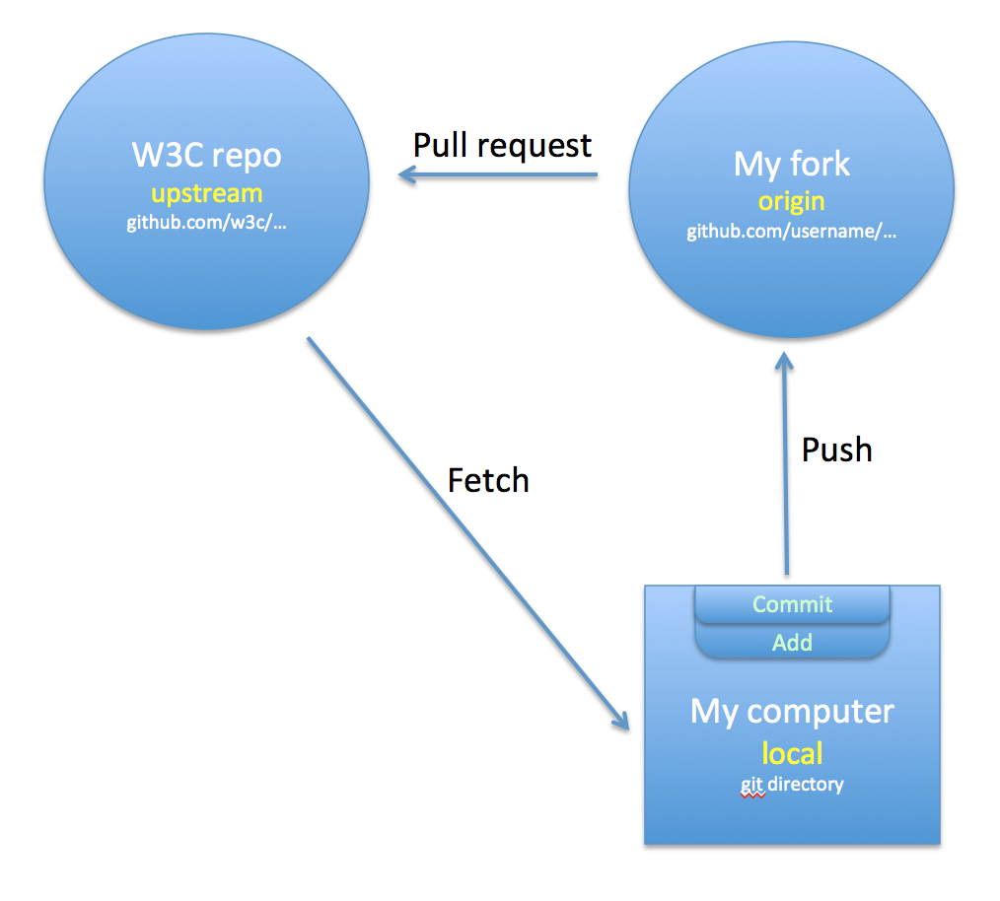

The W3C Internationalization Activity has task forces which use GitHub for document development. This page provides guidelines to help people contribute content if they are unfamiliar with GitHub. Some of this information is adapted from the web-platform-tests documentation.
For the examples we will use the GitHub username myUserName and we'll use a repository (repo) name, repoName. You should substitute your own username wherever you see myUserName, and the name of the repo you want to work with for repoName.
While this guide covers both command-line and visual tools, we recommend using GitHub Desktop if you are unfamiliar with the terminal. It provides a friendly interface for most of the tasks described here.
Choose your tool:
- GitHub Desktop: Best for beginners. Visual interface, handles most configuration automatically.
- Command Line: Powerful and flexible. Standard for many developers.
- VS Code: Great if you are already using it for editing files.
If you have comments or suggestions about how to improve this page, feel free to raise a GitHub issue.
See also the editorial guidelines.
Setting up GitHub
If you haven't used GitHub before, follow the instructions in this section. Otherwise, skip to the next section.
-
Create a GitHub account if you do not already have one, on github.com
-
Download and install the latest version of Git: https://git-scm.com/install/. Please refer to the instructions there for different platforms.
-
Configure your settings so your commits are properly labeled:
-
On Mac or Linux, open the Terminal.
On Windows, open Git Bash (From the Start Menu > Git > Git Bash).
-
At the prompt, type:
$ git config --global user.name "Your Name"
This will be the name that is displayed with your submissions.
-
Next, type:
$ git config --global user.email "your_email@address.com"
This should be the email address you used to create the account in Step 1.
-
-
Set up authentication (GitHub no longer accepts account passwords for Git operations):
You have two main options:
- Personal Access Token (PAT): This is like a password you generate on the GitHub site specifically for Git. See Managing your personal access tokens.
- SSH Keys: A more secure and convenient method for regular contributors. See Connecting to GitHub with SSH.
For beginners, using the GitHub CLI (gh) to log in is often the easiest path:
gh auth login.
Basic overview of how the process works
The repository that you contribute to will depend on the task force you are working with (e.g., alreq). The following diagram and steps illustrate the basic setup and workflow.

In a typical scenario, you will work with three locations:
- W3C Repo (Upstream): The official W3C repository (e.g.,
w3c/repoName). You cannot change this directly; you can only propose changes to it. - Your Fork (Origin): A copy of the W3C repository on your own GitHub account (e.g.,
myUserName/repoName). You can change anything here. - Local Copy: A version of your fork downloaded to your computer. This makes it easier to use your preferred editing tools.
To contribute changes, you will typically follow this 4-step workflow:
- Sync: Regularly update your local copy with changes from the W3C Repo so you are working on the latest version.
- Branch: Create a separate "workspace" (called a branch) for each set of related changes. This keeps your experiments separate from the main code.
- Edit & Push: Make your changes, save them (commit), and upload them (push) to Your Fork on GitHub.
- Propose: Raise a pull request (PR) on GitHub. This asks the W3C editors to review and merge your branch into the official W3C Repo.
How to make your fork
Once you have Git set up, you will need to fork the original repository. This will enable you to submit your proposed changes using a pull request.
-
In the browser, go to the GitHub page for the W3C repository, e.g. https://github.com/w3c/repoName/.
-
Click the Fork button in the upper right.
-
The fork will take several seconds, then you will be redirected to your GitHub page for this forked repository, e.g. https://github.com/myUserName/repoName/.
Cloning your forked repo to your computer
The next step is to clone (download) a copy of your forked repo to your local machine.
Using GitHub Desktop
- Go to your fork's page on GitHub (e.g.,
https://github.com/myUserName/repoName). - Click the green <> Code button.
- Select Open with GitHub Desktop.
- Follow the prompts in the app to choose a location on your computer and finish cloning.
Using the Command Line
- Open your terminal or command prompt.
- Use cd to navigate to the folder where you want to keep your project (e.g.,
cd Documents). - Type the following command:
$ git clone https://github.com/myUserName/repoName.git
(Replace myUserName with your GitHub username, and repoName with the name of the repository.)
This will create a subdirectory called repoName containing all the files.
Configuring remotes (Setup upstream)
You should configure your local repo to track the original W3C repository as an "upstream" remote. This allows you to easily pull in changes made by others.
Using GitHub Desktop
GitHub Desktop usually detects that your repository is a fork and sets up the "upstream" remote for you automatically. You often don't need to do anything here!
Using the Command Line
-
On the command line, navigate to your project directory:
$ cd <pathname>/repoName
(Remember the Pro tip: type
cdand drag the folder into the terminal.) -
Check your current remotes:
$ git remote -v
It should show
originpointing to your fork. Ifupstreamis missing, add it:$ git remote add upstream https://github.com/w3c/repoName.git
Synchronising your local files and your fork with the W3C repo
You should regularly bring your local copy of the files up-to-date with the latest commits in the W3C repository.
Using GitHub Desktop
- Click the Fetch origin (or Fetch upstream) button at the top of the app.
- If there are new changes, click Update from upstream (or Pull origin).
- To push these changes to your fork on GitHub, click Push origin.
Using the Command Line
-
On the command line, navigate to your project directory.
-
Make sure that you are on the default branch (e.g.,
gh-pagesormain).$ git checkout gh-pages
-
To pull in changes from the W3C repository, first fetch them:
$ git fetch upstream
Then merge them into your local branch:
$ git merge upstream/gh-pages
-
Finally, push these changes to your fork on GitHub too:
$ git push origin gh-pages
For additional information, please see the GitHub docs.
Making changes and proposing them
Now we describe steps to create content and how to request that the changes be merged into the content on the W3C repo.
Before you start on these steps, ensure that you have fetched the latest files from the W3C repo by following the steps in the previous section!
Also, ensure that you start from the gh-pages branch before creating a new feature branch.
Create a new branch
A branch is a separate workspace for your changes.
Using GitHub Desktop
- Click on the Current Branch button at the top.
- Click New Branch.
- Give it a descriptive name (e.g.,
arabic-joining-forms) and click Create Branch.
Using the Command Line
Check you are on the gh-pages branch:
$ git checkout gh-pages
Then create and switch to a new branch:
$ git checkout -b myBranchName
Make the changes to your content
Edit the files you want to change or create.
Prepare your files for submission
Using GitHub Desktop
- The app will show you a list of "Changed files" on the left.
- Type a short description in the Summary box at the bottom left (e.g., "New section on Arabic joining forms").
- Click Commit to [your branch name].
Using the Command Line
-
Tell git to add the files you'd like to commit:
$ git add [file1] [file2]
-
Once you've added everything, you can commit and add a message:
$ git commit -m "New section on Arabic joining forms"
Request that your changes be incorporated into the W3C repo
Using GitHub Desktop
- Click Publish branch (or Push origin) at the top.
- Click Create Pull Request. This will open your web browser to the GitHub website.
Using the Command Line
-
Push your branch to your fork on the server:
$ git push origin myBranchName
-
Go to your fork on GitHub in the browser.
Finishing on GitHub
- Click the "Compare & pull request" button that usually appears, or go to the "Pull requests" tab and click "New pull request".
-
Add a descriptive title and comment explaining your changes, then click "Create pull request".
-
Wait for feedback. Reviewers may suggest changes before merging.
Modify your submission
If a reviewer asks for changes, follow these steps:
-
Ensure you are on your feature branch:
$ git checkout myBranchName
-
Make the changes and commit them just like before.
-
Push the changes to your fork:
$ git push origin myBranchName
-
The pull request will automatically be updated with the new commit.
Cleaning up
Once your pull request has been accepted and merged:
- Delete your branch on GitHub using the 'Delete Branch' button in the PR.
- Or on the command line:
$ git push origin --delete myBranchName
- Switch back to your main branch and sync:
$ git checkout gh-pages $ git fetch upstream $ git merge upstream/gh-pages $ git push origin gh-pages
GitHub hints & tips
See an HTML version of a page
To see how your changes look in a browser, you can use the following methods:
-
Netlify Deploy Preview: This is the recommended way to view changes in a pull request. Once you have created a pull request, Netlify will automatically build a preview of your changes. You can find the link in a comment by the netlify bot.
-
Local Server: If you want to see your changes before committed and pushing them, you can simply open the HTML file in your browser directly from your local repository on your computer.
Publishing with Echidna
Follow these steps to quickly and easily publish your document to /TR space. It is good to keep differences between the editor's draft on GitHub and version on /TR as small as possible. Echidna makes it possible to self-publish at any time, without having to wait for the webmaster's help.
Note that you can't publish First Public Working Drafts using Echidna. That has to go through the normal process.
Setting things up
Ask your staff contact to do the following:
-
Get a token for your spec from the W3C. You'll need to keep this somewhere safe for when you want to publish the document.
-
Set the
w3cidvariable inside the document for the editors who will be doing the actual publication. - Add a config file for the document on GitHub.
Actually publishing
Follow these steps:
- Check that the GitHub.io Editor's Draft (ED) is valid HTML using the HTML5 validator.
- Check that all links work using the W3C Link Checker.
- Run a spell checker over the document.
- Update the config file for the document so that it lists all images and other dependant files. The config file will be at the top level of the GitHub repo, and usually has the name of the document, without an extension.
- Go to the Pubrules checker and run it against the following
URL:
https://www.w3.org/publications/spec-generator/?type=respec&url=https%3A%2F%2Fw3c.github.io%2FlinkToYourSpec%2F%3FspecStatus%3DWD%26shortName%3DtheShortName
Fix anything that's needed, and rerun the checker until it's ok. You will probably find that the checker complains about not being able to find a dependent file (usually the .css file). That's because the URL above creates a WD version of your main file in a new location for testing, and doesn't copy over the dependent files. You can ignore those messages, but you should double-check that the config file lists all dependent files. - Open a terminal window and run the following Curl statement:
curl 'https://labs.w3.org/echidna/api/request' --data 'url=echidnaConfigURL&decision=decisionUrlOnMailingList&token=documentToken'Note:
curlis a command-line tool. If you are on Windows andcurlis not found, you can use Git Bash. - Go to the TR-Notification list to check whether the document was successfully published.